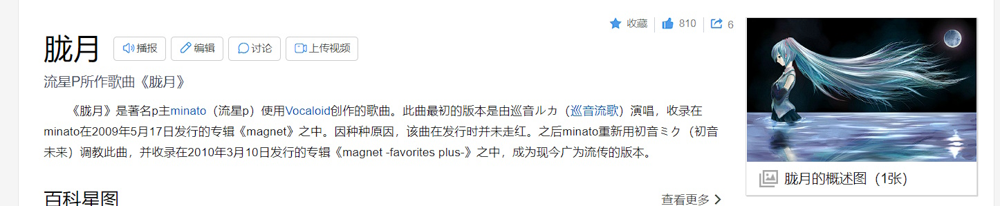
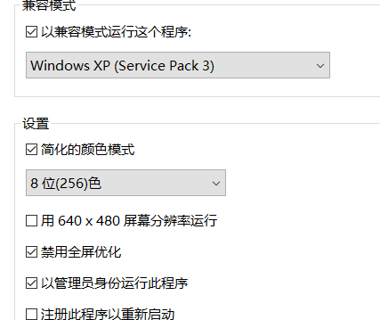

——十年之前，十年之后。
十多年前，我在一边听着这首《朧月》，一边在玩罪恶都市，CS1.6。
十多多后，我还是在听这首歌。游戏倒是不玩了。
很奇特地，我几个月前就想找一张初音未来的图片。那张图片也是十多年前保持着的，但是一直没找到。
今天又找了一会，找到了，没想到啊，居然是这么一张图。
我还是不确定这图和歌曲的关系，或许是歌曲配图。
不过时间确实对上了。
于是我把它放在了我的网站的about里边。
关于我现在还在看十多年前的图片，我突然有一些想法。
我记得焦裕禄，并不是因为他的事迹，反而是因为他的照片，双手叉腰，侧头笑，确实很帅。
现在有这么帅的么？有肯定有，但是我没关注。
同样地，现在有很好听的歌曲么？有肯定有，我也没关注。
或许这就是“活在了过去的影子里边”。老了。
这也谈不上不好，即使我们从出生就开始学习，学到100岁才死，也不过沧海之一粟。或许会有人觉得你老气。
都说潮流十年一轮回，我觉得有一个更进一步的说法：蛇蜕。
潮流这条蛇，十年蜕一次皮，一次蜕十年。
前几天和朋友谈到硬件软件，我当时发表意见：
从另一个角度来说，
这些年的硬件技术发展太快了，从而然软件开发可以“偷懒”
说偏激一点，要不是手机太流畅了，空间太大了，腾讯淘宝之类哪里敢这么搞。
不过话也可以反过来说，
没新的东西搞了，也只能死命塞乱七八糟的功能。
说实在的，现在的软件，确实有点走到“末路”的感觉。
所以腾讯推出了TIM。
或许可以缓解以下。
什么时候推出可以按需加载的，模块化功能的QQ还差不多。
真是不敢相信，KKrieger仅仅96k，就能塞下一个FPS。（虽然运行起来需要500M的内存……
我甚至可以丢个下载地址在这里。
记得以兼容性运行哟。
PS：上面这张图片16K